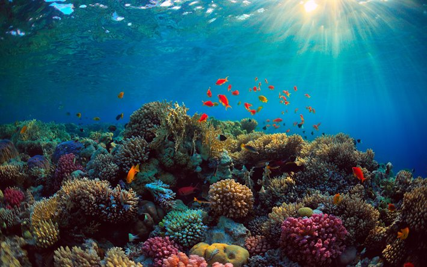
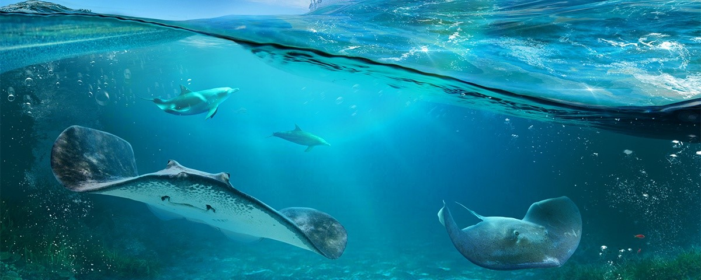

"Conservação e uso sustentável dos oceanos, dos mares e dos recursos marinhos para o desenvolvimento sustentável."
Você já parou para pensar o quanto um "lixinho" pode significar os animais? Bom, pode custar-lhes uma vida.
E quando se trata da vida na água? Você sabia que os oceanos e mares recebem milhões de toneladas de substâncias poluentes?
Infelizmente vivemos com essa realidade.
O ODS número 14 tem como objetivo melhorar a vida marinha, é importânte previnir, minimizar e enfrentar os impactos causados pela acidificação. Precisamos assegurar a conservação e o uso sutentável dos oceanos e seus recursos.
